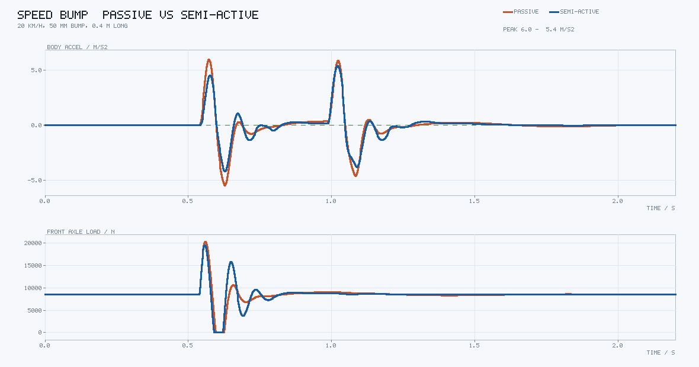
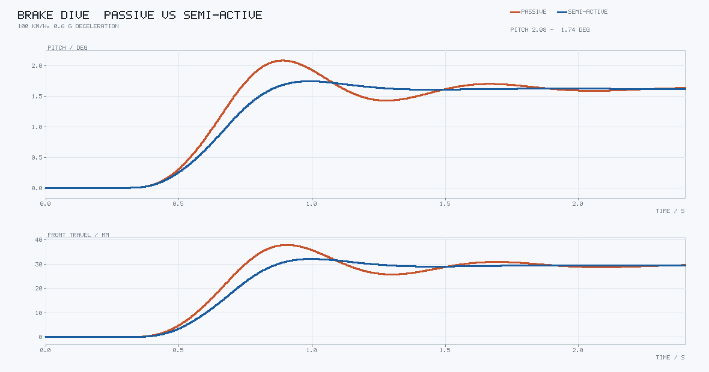
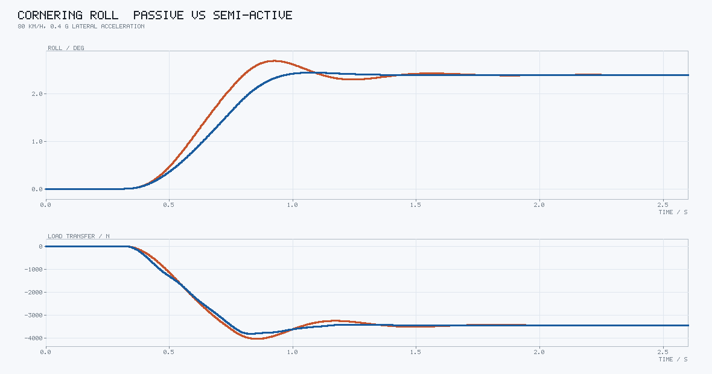
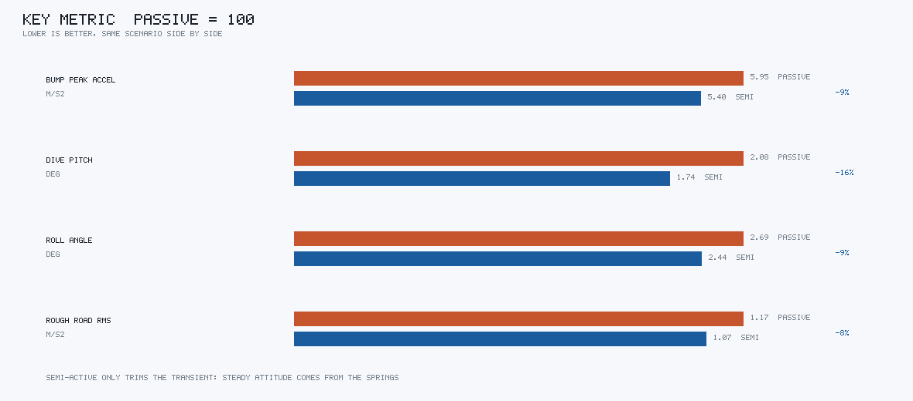

半主动悬架车身姿态控制仿真
这个模块做的是整车垂直方向的三个姿态量：车身垂向跳动、制动点头（俯仰）、过弯侧倾。 四个减振器用天棚 + 地棚混合律在线调阻尼，对比被动减振器在过减速带、急刹、过弯和 随机路面四个工况下的差别。
站点里地面载具部分已经有大量横向与纵向控制的内容（循迹、AEB、ACC、ESC、制动距离 核算），但垂直方向除了动力性测试基本是空白。而乘客最先抱怨的恰恰是垂直方向：过 减速带被颠起来、急刹点头、过弯侧倾。横向控制做得再好，这三件事该难受还是难受。
半主动悬架的特别之处在于它只能耗能，不能出力。空气悬架可以把车身顶起来，半主动 减振器不行，它只能在当前相对速度允许的方向上加阻力。所以这个模块真正想说明的是： 姿态控制在这类执行器下能做到什么、做不到什么。
运行效果
过减速带（20 km/h，50 mm 高、0.4 m 长的半正弦凸块）。上半是车身垂向加速度，下半是 前轴总轮荷。两个峰对应前轮和后轮压过凸块的时刻：

急刹（100 km/h，0.6 g）。俯仰角为正表示车头下沉。两条曲线最后收敛到同一个值， 差别全在过冲上：

过弯（80 km/h，0.4 g 侧向加速度）。下半张画的是左右轮荷差（左侧两轮减去右侧两轮）， 侧倾的物理后果全压在载荷转移上：

四个工况的关键指标，被动归一成 100：

结果
| 工况 | 车身加速度峰值 | 车身加速度 RMS | 姿态角峰值 | 最小轮荷 |
|---|---|---|---|---|
| 过减速带（20 km/h，50 mm） | 5.95 → 5.40 m/s²（−9.3%） | 1.246 → 1.070 m/s²（−14.2%） | 俯仰 0.65 → 0.63° | — |
| 急刹（100 km/h，0.6 g） | 0.045 → 0.040 m/s² | 0.0184 → 0.0144 m/s²（−21.7%） | 俯仰 2.08 → 1.74°（−16.3%） | 2422 → 2584 N |
| 过弯（80 km/h，0.4 g） | — | — | 侧倾 2.69 → 2.44°（−9.2%） | 2718 → 2758 N |
| ISO 8608 C 级（80 km/h） | 3.27 → 3.11 m/s² | 1.170 → 1.074 m/s²（−8.2%） | 俯仰 0.59 → 0.50° | 1221 → 1292 N（+5.8%） |
减速带工况的最小轮荷两边都是 0：50 mm 的凸块在 20 km/h 下会让前轮整个离地一瞬间， 这个指标在单事件工况上没有区分度，所以看接地性要用随机路面那一行。
稳态姿态不由减振器决定
制动表格里的 2.08° → 1.74° 很容易被误读成"半主动把车身顶起来了"。实际不是：两条 曲线在 2.0 s 之后都收敛到 1.62°，减振器只削掉了中间的过冲。
原因是稳态下所有速度项为零，悬架力退化成纯弹簧力 $F_i = k_i \Delta_i$。俯仰角由 力矩平衡直接解出来：
这里的 $k_i$ 不是螺旋弹簧刚度，而是弹簧与轮胎的串联刚度 —— 轮胎软，整个拐角就软：
代进去算得 1.620°，仿真收敛到 1.62°。测试里有一条 test_稳态俯仰角等于串联刚度下的解析解
守着这个对账关系。
这条结论对控制策略有直接影响：想改稳态姿态只能动弹簧（或加主动力），想改 过渡过程才轮到减振器。所以半主动悬架的卖点从来不是"过弯不侧倾"，而是"侧倾来得 慢一点、冲击小一点"。广告里那种"车身如履平地"是空气悬架或主动悬架的事。
模型
7 个自由度：车身垂向 $z_s$、俯仰 $\theta$、侧倾 $\varphi$，加上四个非簧载质量各自的 垂向位移 $z_{u,i}$。$a_i$ 是车轮纵向位置（前正），$b_i$ 是横向位置（左正）。
单角悬架力，压缩为正：
三个车身自由度：
纵向减速时惯性力在质心高度 $h$ 上产生点头力矩；侧向加速度的力臂是质心到侧倾中心 的距离 $h - h_{rc}$，不是质心高度，这一项差 0.47 m，漏掉的话侧倾角会算大一倍多。
轮胎只有垂向刚度与很小的阻尼，而且只能受压：
先把总量夹到非负、再减掉静态轮荷，车轮离地时动载停在 $-F_{z0}$。这个顺序不能反： 如果先算增量再夹，车轮离地后会出现"地面把车轮往下拽"的负刚度假象，仿真里表现为 车身姿态一路发散。
路面写成空间函数 $z_r(x)$，四个轮子按各自纵向位置取同一张路面，前后轮之间的时间差 $L/v$ 自然产生，不需要额外加延时。随机路面按 ISO 8608 合成：
$N = 200$，空间频率 $0.011 \sim 2.83$ cycle/m，C 级 $G_d(n_0) = 256 \times 10^{-6}$ m³， 相位由固定 seed 生成，所以每次跑出来的曲线逐点相同（有测试守着）。
积分用定步长 RK4，$\Delta t = 0.5$ ms。步长减半后峰值加速度变化小于 1%。
控制律
每个角独立算两个期望阻尼系数，取大再夹到 $[c_{\min}, c_{\max}]$：
这两个条件不是随便凑的，各自对应一个"减振器此刻能帮上忙"的方向：
- 天棚：减振器的出力方向恰好顶住车身。车身往上走、车轮相对车身往下走，此时加大 阻尼，地面反力就被引到车身上去抵抗运动。车身速度和相对速度同号时，减振器出力只会 推着车身走得更快，加阻尼反而更颠。
- 地棚：减振器的出力方向恰好压住车轮。车轮往上跳、比车身跳得快，此时加大阻尼能 把轮胎动载压下去，保住接地。
两个条件都不成立时，想要的力在物理上产生不了，只能退到最小阻尼 500 N·s/m 少传一点 冲击上来。第一版把这两个不等号的符号写反了，结果半主动比被动还要颠，改过来才对。
阻尼阀不是瞬间到位的，加一层一阶跟随：
没有这一层，控制器会在 500 和 6500 之间每个积分步硬切，画出来的曲线全是锯齿。
标定：舒适性和接地性的权衡
$K_{\text{sky}} = 4200$、$K_{\text{gh}} = 1200$ N·s/m，$\tau = 20$ ms。地棚增益是这里 唯一的自由度，扫一遍就能看出半主动悬架绕不开的那条权衡线：
| $K_{\text{gh}}$ | 减速带峰值 | 减速带 RMS | 随机路面 RMS | 随机路面最小轮荷 | 随机路面轮荷 RMS |
|---|---|---|---|---|---|
| 0（纯天棚） | 4.99 m/s² | 0.96 m/s² | 0.94 m/s² | 681 N | 1178 N |
| 600 | 5.04 | 0.97 | 0.98 | 863 N | 1153 N |
| 1200（默认） | 5.40 | 1.07 | 1.07 | 1292 N | 1103 N |
| 2500 | 6.43 | 1.30 | 1.26 | 1096 N | 1105 N |
| 4000 | 7.37 | 1.52 | 1.38 | 904 N | 1139 N |
纯天棚的舒适性最好（减速带峰值 4.99、随机路面 RMS 0.94，被动是 5.95 / 1.17），代价是 最小轮荷从 1221 N 掉到 681 N —— 车轮频繁离地。地棚加太多则两头都不讨好：它把车轮和 车身绑得更紧，冲击直接传上来了。
默认取 1200：这是唯一让最小轮荷明显高于被动的一档（1292 N 对 1221 N），代价是轮荷 RMS 从 1069 N 升到 1103 N。接地性是安全指标，舒适性是体验指标，标定先保前者。
阀门时间常数也试过更小的：$\tau = 15$ ms 配 $K_{\text{sky}} = 5200$ 能把减速带峰值压到 5.06、俯仰压到 1.67°，但随机路面的最小轮荷掉到 1186 N（比被动的 1221 N 还低）， 所以没有采用。
在 RViz2 里看
# 只起节点（rviz 默认 false）
ros2 launch semi_active_suspension main.launch.py scenario:=speed_bump
# 要界面再加 rviz:=true
ros2 launch semi_active_suspension main.launch.py scenario:=speed_bump rviz:=true
rviz 默认关着：无显示环境（CI、容器、WSL 未配 X）里 RViz2 加载 Ogre 的渲染库会
直接 exit 127，节点本身没毛病，但一起启动容易误判成节点挂了。先确认
/suspension/markers 在出数据，再开界面。
两排并排：上排被动、下排半主动。每排画车身参考面、四个减振器、四个车轮和脚下正在 向后滚动的路面；最前面一排竖条是四个减振器此刻的阻尼系数，颜色从蓝（最软）到橙（最硬）。 车身固定在世界原点，路面按行驶里程滚动，所以看到的是"车压过什么"而不是"车跑到哪"。
height_gain 默认 4：悬架行程只有几十毫米，1:1 画在 RViz 里基本看不出来，放大 4 倍
才看得清，但代价是 50 mm 的凸块看起来像 200 mm。
复现
cd src/ground/semi_active_suspension
python3 -m semi_active_suspension.main --output results # 四张图 + 指标表
python3 -m pytest tests -q # 38 项
只有标准库，PNG 是自己编的（索引色画布 + 5×7 点阵字 + zlib），不需要 numpy 或 matplotlib，也不需要 ROS。
已知局限
- 轮胎是单点接地模型，没有包络效应。压过 50 mm 凸块时前轴轮荷冲到 20 kN（静态 8 kN）， 真实轮胎靠胎面把短波"抹平"，峰值没这么夸张。要看绝对量级得先用柔性环模型标定。
- 只有垂向动力学，没有垂向与侧向/纵向力的耦合，所以侧倾是准静态侧向加速度激励出来的 结果，不涉及载荷转移改变侧偏刚度、进而改变横摆响应这条回路。
- 减振器画成理想可调阻尼，没有压缩/复原行程的不对称，也没有温度衰减和摩擦滞回。
- 执行器延迟只建模成一阶惯性，没有通信与采样延迟。